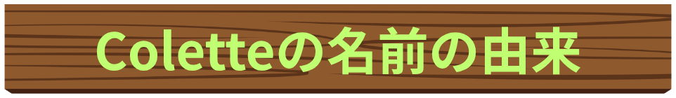
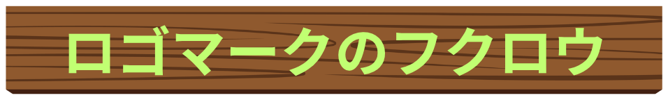
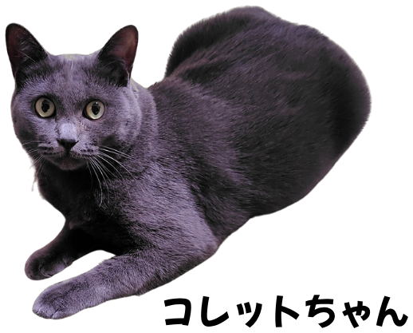
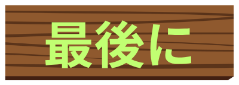

我が家には猫が1匹います。3歳の女の子です。見た目はロシアンブルー。保護猫としてお迎えしました。実は、この子の名前がコレットちゃんといいます。
保護主さんが、お洒落な雰囲気とインスピレーションから名付けたといいます。洋酒の名前としても有名ですよね。
外で生活していた時代に子供を沢山授かり、その子たちもそれぞれ保護猫として引き取られていったそうです。それを見守るかのように最後まで残ったコレットちゃんを妻と娘と3人で譲渡会で一目ぼれして家族として迎えることとしました。お母さんを経験しただけあり、まだ3歳にもかかわらず落ち着きと優しさ溢れるコレットちゃんです。娘がイヤイヤして大声で泣き叫んで近づいても一切爪を立てずに、すーーっ と距離を置いて、静かに様子を見る。まさに、お母ちゃんコレットです。
そんな、コレットちゃんの優しさ、落ち着き、慈悲深さに感銘を受け、屋号をColetteにしました。そして、弊社の防災理念としてColetteのそれぞれの文字を使って以下の言葉を選びました。
- Collaboration（協力・連携）：地域、行政、専門機関が手を取り合い、一丸となって災害に備える。
- Observation（観察・監視）：気象情報や周辺環境の変化を常に観察し、いち早く危機を察知する。
- Learning（学び）：過去の災害事例や教訓から学び、知識をアップデートし続ける。
- Education（教育・啓発）：正しい防災知識を周囲に広め、コミュニティ全体の意識を高める。
- Technology（技術）：防災技術を積極的に活用し、効果的な対策を講じる。
- Empowerment（備えによる安心）：防災準備を通じて、災害に対する強さと、立ち向かう力を高める。


あらゆる動物の中で、唯一賢者として位置づけられているのがフクロウです。
西洋では、フクロウは古代ギリシャ神話から「知恵の象徴」とされてきました。知恵、工芸、戦略を司る女神アテナ（ローマ神話ではミネルヴァ）の使いがフクロウであったためです。フクロウの大きく見開いた目は、真実を見抜き、暗闇を見通す「知恵の目」と解釈されました。
暗闇の中でも活動できる能力が、物事の本質や真理を深く考察する賢者の姿と結びつき、「思慮深い」「落ち着きがある」というイメージに繋がりました。
日本においてフクロウが賢者とされるのは、語呂合わせや縁起の良い当て字が主です。「苦労しない」という意味で「不苦労（ふくろう）」として縁起が良いとされます。「福が来て、朗らかになる」という意味で「福来朗（ふくろう）」として幸福を招く賢者として親しまれています。
また、その静かに佇む姿から、古くから学問や知性の象徴としても捉えられてきました。
このように、西洋では「神話的・知性的な背景」日本では「語呂合わせや縁起の良さ」から賢者や知恵の象徴として親しまれています。
以前、趣味だった写真を撮りに広島県尾道市へ足を運んだ話です。尾道は坂の町として有名で、大林宣彦監督の映画の聖地としても有名です。その坂の途中にフクロウの石像がお地蔵さんのように祭られていました。
猫の町や尾道ラーメン、そして造船所としても有名な尾道ですが、フクロウの石像がひっそりと鎮座していたのがとても印象的で、海と坂の町の風景にとてもマッチしていてとても神秘的で、今でも素敵な思い出として忘れられないエピソードの一つです。
今回のロゴマークとしてフクロウを採用した理由のひとつでもある私の思い出です。

コレットちゃんや森の賢者フクロウのように、暗闇でもあらゆるものが見通すことができる「監視と真実の目」と防災知識を養うべく、日々努力を惜しまず、精進してまいります。
リニューアルスタートしたColette防災情報センターをどうぞこれからも宜しくお願いいたします。